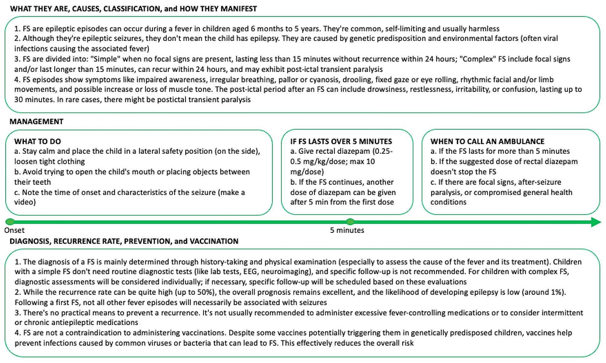

Etiologia por idade até o “não” da crise febril
Criança de 2 anos, febre, crise. É epilepsia? A resposta está no limiar etário e na palavra que a fonte não confunde: crise febril ≠ epilepsia.
1. O eixo preferencial é a idade
A etiologia da crise/epilepsia admite várias classificações (causa, patogênese, faixa etária…). Para prova e para o generalista, o eixo preferencial é a idade.
2. Neonato: não é “normal”
Período neonatal não é um período normal de crise epiléptica. Crise no neonato → algo está errado e exige investigação. Causas a considerar: distúrbio metabólico, infecção congênita, má formação congênita, anóxia periparto.
3. Seis meses a cinco anos: crise febril lidera — e não é epilepsia
Na faixa seis meses a cinco anos, o grande motivo, disparado na frente, é a crise febril (convulsão febril). Regra de ouro / pegadinha: crise febril não é epilepsia. Ainda assim, é importante causa de crise na infância — faixa de referência 6 meses a 5 anos.
O algoritmo completo (simples × complexa, conduta) é aprofundamento próprio — fora do alcance deste recorte; aqui fica o limiar conceitual.
Faixa 6 meses a 5 anos. É causa importante de crise na infância, mas não define epilepsia.
4. Arco fechado e o que este recorte não carrega
Até o corte da fonte, o arco é: caso João → súbita/transitória → definição em 3 vias → provocada × não provocada → alma da crise (hiperexcitação) → princípio do AED/estimulantes → etiologia etária até o não da crise febril.
O que não está neste recorte (e não se inventa a partir dele): classificação focal × generalizada, história natural da TCG, escolha de AED por tipo, síndromes (West, LGS, ausência infantil completa, rolândica, JME, EMT), banco de questões.
Para além do limiar conceitual desta plataforma:
As pontes acima não estão habilitadas neste recorte — o que não está aqui não se inventa a partir do que está.


Quiz · P7 2 perguntas · resposta com feedback
Q1. Crise febril na faixa clássica:
Q2. Crise no período neonatal: